开心果 Need Car · 2023-12-07T06:34:00+08:00 · 微信原文
不管是搞汽车软件开发还是软件测试，仿真是必不可少的一个环节。对于开发，可以通过仿真，确认软件功能的可靠性；对于测试，可以通过仿真，发现软件潜在的Bug。仿真的软/硬件设备多种多样，各有各的特点。本文基于CANoe+VN5650，聊一聊仿真节点的VLAN（Virtual Local Area Network）配置以及仿真节点UDP Capl编写。
本文+前文《以太网基础：为什么需要VLAN？》，希望可以更好地帮助你理解和学习VLAN。
1、仿真节点创建及UDP Capl编写
（一）仿真节点创建
CANoe软件中，可以在总线中创建仿真网络节点（Simulation Network Node）模拟整车通信环境，以此替代真实的物理节点。本文，创建一个Ethernet仿真节点，具体步骤如下：
1、Simulation->Simulation Setup->Nodes->Insert Network Node
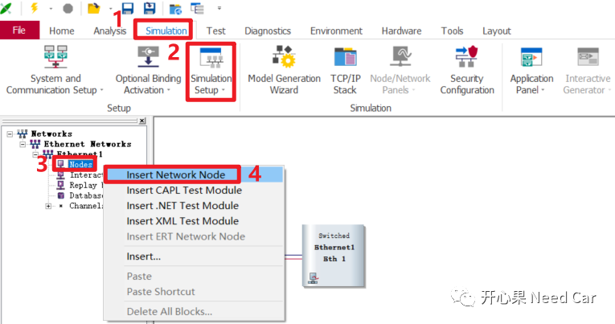
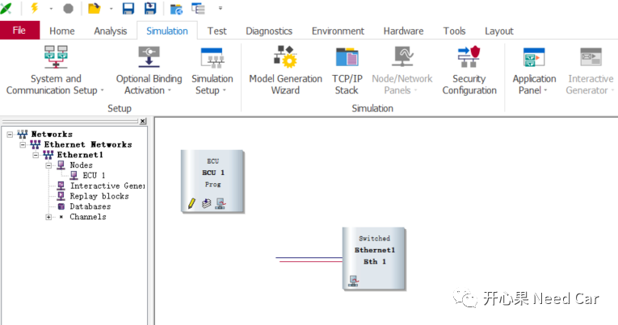
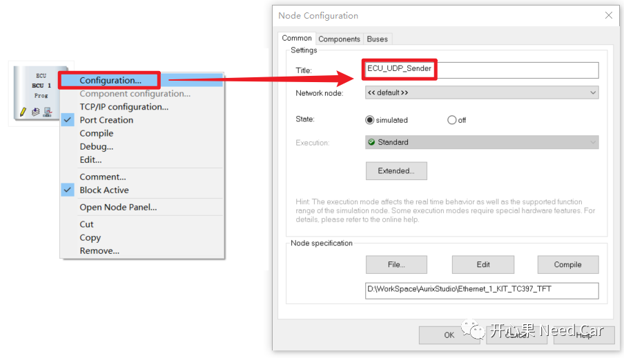
（二）UDP Capl脚本编写
1、单击仿真节点的"Edit"按钮，进行Capl脚本的编写
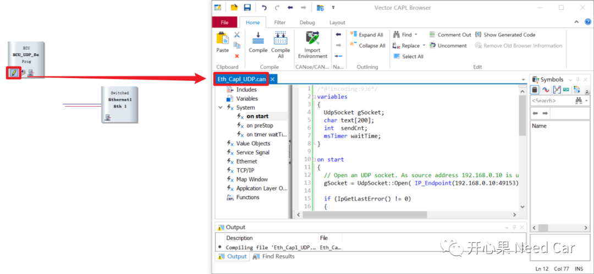
/*@!Encoding:936*/variables{UdpSocket gSocket;char text[200];int sendCnt;msTimer waitTime;}on start{/* Open an UDP socket. As source address192.168.0.10 is used,Port = 49153 */gSocket = UdpSocket::Open( IP_Endpoint(192.168.0.10:49153) );if (IpGetLastError() != 0){// if UdpSocket::Open fails, we print a message to the write windowwrite( "<%BASE_FILE_NAME%> UdpSocket::Open failed with result %d", IpGetLastError() );}setTimer(waitTime,1);}on preStop{cancelTimer(waitTime);// Close socket on measurement stopgSocket.Close();}on timer waitTime{text[0] = sendCnt++;text[1] = 0x55;text[2] = 0xAA;// send text to IP address/UDP port of the receivergSocket.SendTo( IP_Endpoint(192.168.0.11:49155), text, strlen(text) );write ("Send UDP Info.");setTimer(waitTime,100);}
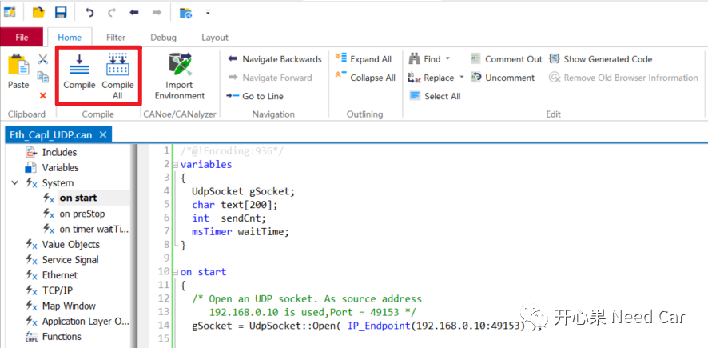
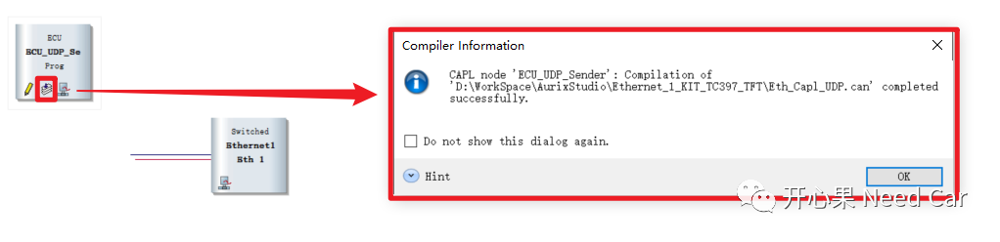
2、仿真节点的VLAN配置
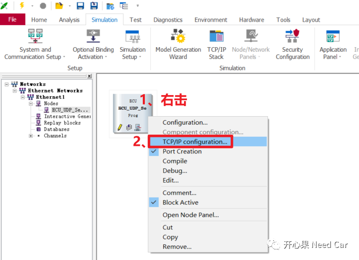
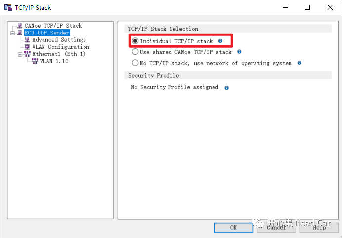
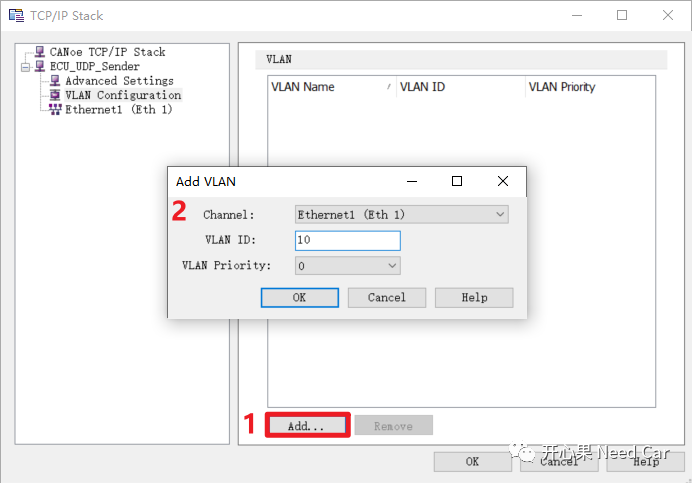
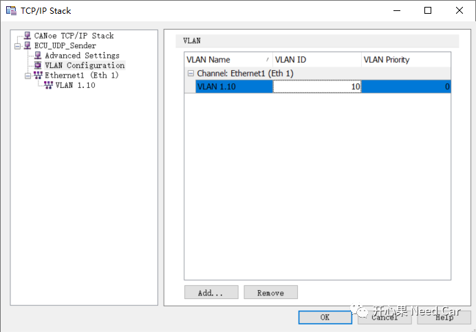
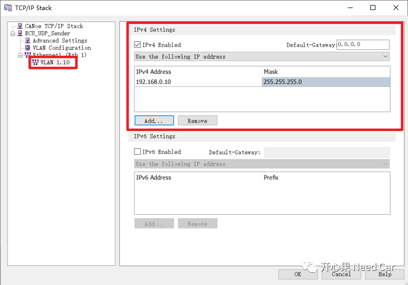
3、包含指定VLAN的UDP通信
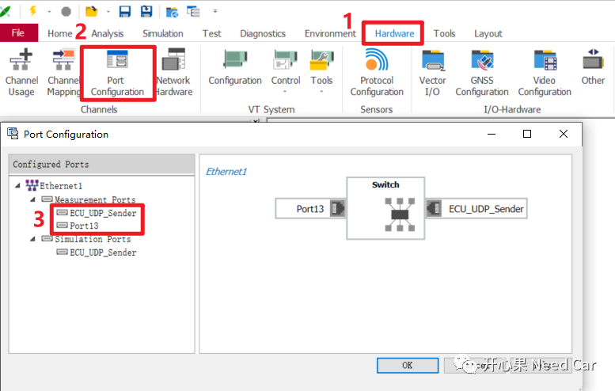
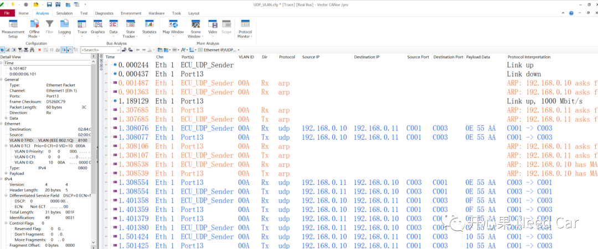
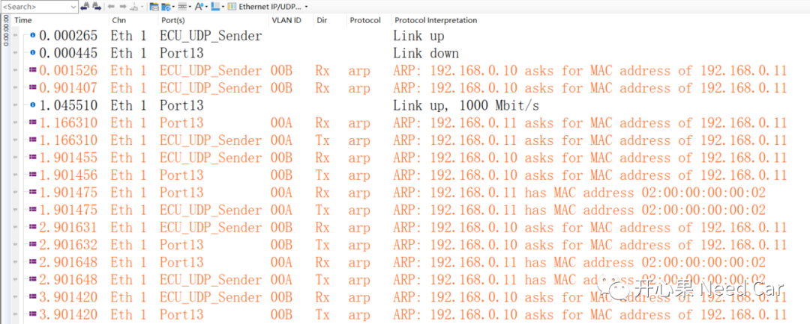
往期精彩回顾